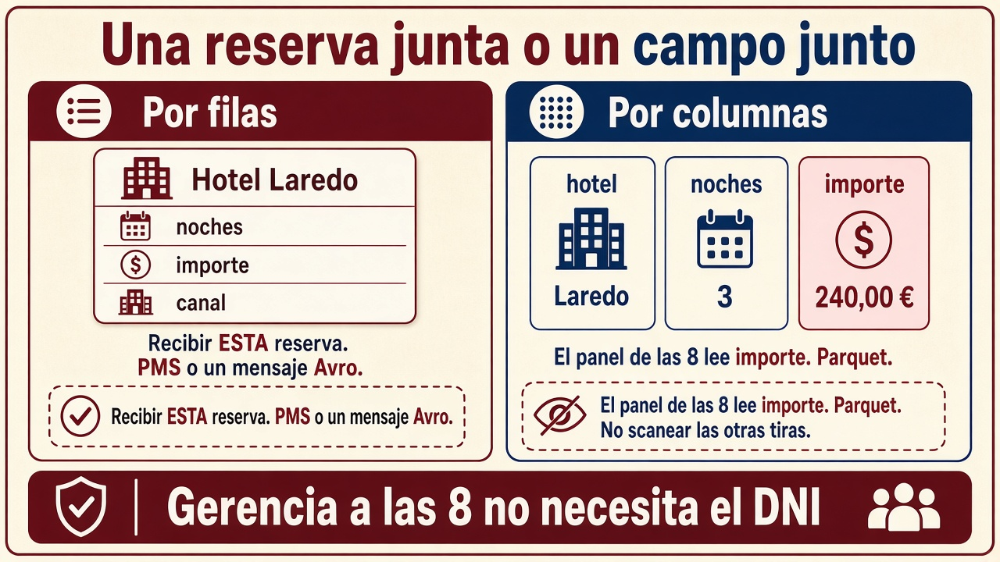
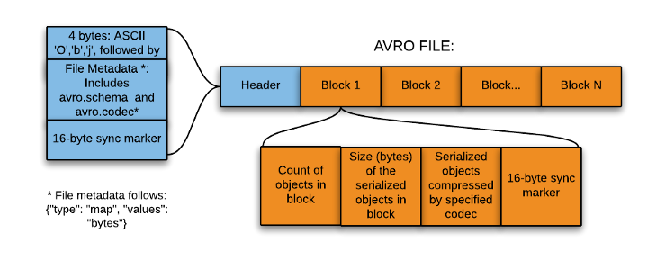
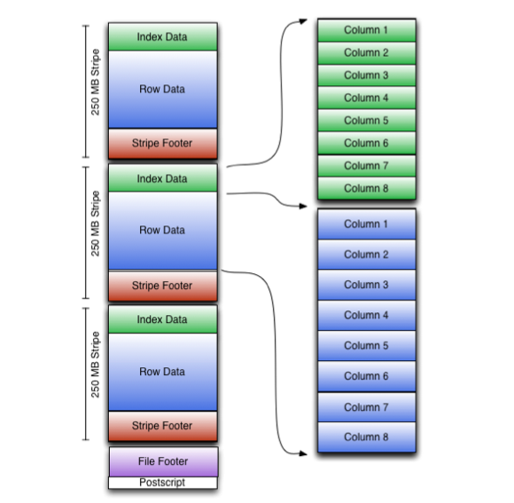
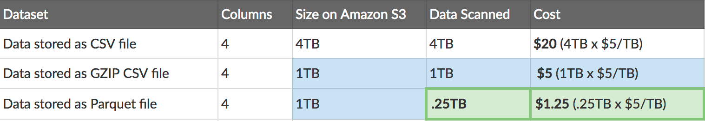

1.7. Formatos de datos¶
El criterio c) pide elegir el formato adecuado para el almacenamiento. Conforme el dato viaja por los pipelines, hay que serializarlo (pasarlo a bytes) y a menudo convertirlo. El mismo dataset en CSV o en Parquet cambia:
- el tiempo de la consulta,
- el coste en cloud (a menudo pagas por lo escaneado),
- si Spark o Hadoop pueden partir el fichero entre nodos.
No es “cuál es más moderno”. Es “qué operación voy a hacer mil veces”.
Qué se le pide a un formato¶
Un formato “bueno” en Big Data suele cumplir:
- Independiente del lenguaje. Lo escribe Java y lo lee Python.
- Expresivo. Anidados, nulos, tipos (un entero no es un texto
"10"). - Eficiente. Pocos bytes y poca CPU al leer.
- Evolucionable / dinámico. Añadir un campo sin reescribir el histórico entero; que un programa pueda definir tipos nuevos.
- Autónomo (standalone). El fichero lleva lo necesario para interpretarlo (sobre todo el esquema).
- Partible (splittable) y comprimible. Si el fichero es un bloque único que no se puede cortar, un nodo lo lee entero y el clúster no sirve.
“Partible” es la propiedad que más se olvida: un JSON con un array de 10 millones de objetos entre [ y ] no se trocea bien. Diez millones de líneas JSONL, sí.
Elegir bien suele dar: lecturas o escrituras más rápidas, trozos para el clúster, esquemas que pueden cambiar y menos euros de disco y de red (por ejemplo con Snappy u otros compresores).
De un vistazo¶
| Característica | CSV | XML / JSON | Avro | Parquet | ORC |
|---|---|---|---|---|---|
| Independiente del lenguaje | Sí | Sí | Sí | Sí | Sí |
| Expresivo (anidados, tipos) | No | Sí | Sí | Sí | Sí |
| Eficiente (tamaño / CPU) | No | No | Sí | Sí | Sí |
| Esquema que evoluciona bien | A medias | A medias | Sí | Regular | Regular |
| Autónomo (esquema con el dato) | A medias | Sí | Sí | Sí | Sí |
| Partible en el clúster | A veces | A veces | Sí | Sí | Sí |
| Orientado a columnas | No | No | No | Sí | Sí |
| Encaje con Hive | — | — | Regular | Sí | Sí |
CSV y JSON ganan en “lo abre un humano”. Avro, Parquet y ORC ganan cuando el volumen duele.
Texto frente a binario¶
| Texto (CSV, JSON, XML) | Binario (Avro, Parquet, ORC) | |
|---|---|---|
| Abrirlo con el Bloc de notas | Sí | No (hace falta herramienta o librería) |
| Tamaño | Mayor | Menor, sobre todo con compresión |
| Esquema | Implícito o a medias | Suele viajar con el fichero |
| Uso típico | Intercambio, APIs, que un humano lo mire | Lago y analítica a escala |
CSV. Universal y simple. No tipa bien (01 ¿texto o número?), se rompe con comas y saltos dentro de un campo, y para sumar una columna sueles leer todas. Perfecto para entregar un extracto a un compañero; flojo como almacén del lago.
JSON. Expresivo (objetos anidados). Un documento único enorme es mala idea en el clúster.
JSON Lines (JSONL) — un objeto por línea — encaja en lotes. No es lo mismo que un JSON “de libro” con un array gigante:
null es JSON. None es Python. Si mezclas los dos, el parser revienta y parece un error de Big Data cuando es un error de sintaxis.
XML. Sigue en administraciones y facturas. Más verboso que JSON; las mismas precauciones de tamaño y de “¿se puede partir?”.
Filas frente a columnas¶

Imagina una tabla Nombre | Altura | Edad con un millón de personas.
Por filas (CSV, JSON, Avro): guardas Ana, 170, 30 juntos. Leer a Ana entera es barato. Sumar solo las edades obliga a saltar por nombre y altura una y otra vez. Añadir registros nuevos suele ser más sencillo: escribes al final.
Por columnas (Parquet, ORC): un sitio (o un grupo de páginas) tiene las alturas, otro las edades. Sumar edades lee una columna. Reconstruir a Ana obliga a cruzar trozos. Actualizar una fila es caro: hay que descomprimir, tocar y volver a comprimir.
Para no reescribir toda una columna en cada cambio, los ficheros se parten (particiones, clustering: agrupar por fecha, por tienda…). Aun así, tocar una sola fila en columnar duele. Por eso la caja y las reservas (OLTP) suelen guardar en filas. El análisis masivo prefiere columnas.
| Orientado a filas | Orientado a columnas |
|---|---|
| Cada registro junto | Cada columna junta |
| Escribir / leer filas enteras es barato | Leer tres columnas de un millón es barato |
| Compresión peor (tipos mezclados en la misma racha) | Mejor compresión (valores del mismo tipo seguidos) |
| Actualizar una fila, más natural | Actualizar una fila: operación pesada |
Hablemos de tamaño (y de factura)¶
Un orden de magnitud que verás citado: 1 TB en CSV puede quedar en torno a 130 GB en Parquet. En Athena, BigQuery y similares pagas por dato escaneado (en AWS Athena, del orden de 5 $ por TB leído). Si el informe usa 3 columnas de 80, el columnar no es estética: es la factura.
Agregar
Agregar es resumir: sumas, medias, recuentos. “Ventas de Alemania” no necesita el nombre de cada cliente. Columnar + filtrar particiones = menos bytes leídos.
Comprimir: menos disco, más CPU¶
Comprimir busca repeticiones y las recodifica. El fichero ocupa menos, se lee más rápido del disco y viaja menos por la red. A cambio, comprimir y descomprimir gastan tiempo y procesador.
Sobre un fichero de 100 GB, una compresión “media” deja unos 50 GB; “alta”, hacia 40 GB. En Big Data suele primar la velocidad del algoritmo (el job no puede esperar), no el último byte ahorrado.
| Algoritmo | Velocidad | Cuánto aprieta | Dónde lo verás |
|---|---|---|---|
| Gzip / deflate | Media | Media | Avro, Parquet |
| Bzip2 | Lenta | Alta | Archivado en HDFS |
| Snappy | Alta | Media | Avro, Parquet, ORC |
| Zstandard (zstd) | Alta | Alta | Parquet reciente |
Snappy (Google) prioriza ir rápido. Zstandard (Meta) se parece a Snappy en velocidad y a gzip en lo que ocupa: por eso muchos equipos lo ponen por defecto en Parquet nuevo.
En un recorte de ventas (Alemania) los tamaños del temario fueron, más o menos:
| Fichero | Tamaño |
|---|---|
| CSV | ~9,7 MiB |
| Avro | ~6,9 MiB |
| Avro + gzip | ~1,9 MiB |
| Avro + Snappy | ~2,8 MiB |
| Parquet | ~2,3 MiB |
| Parquet + gzip | ~1,6 MiB |
| Parquet + Snappy | ~2,3 MiB |
| ORC (sin comprimir) | ~7 MiB |
No memorices 1,6. Quédate con el orden de magnitud: binario + columnas + compresión tumba el texto plano.
Avro¶

Apache Avro guarda por filas, en binario compacto. El esquema (qué campos hay y de qué tipo) va en JSON, normalmente en la cabecera del propio .avro. Quien lee el fichero siempre sabe cómo se escribió.
Tipos simples: null, boolean, int, long, float, double, bytes, string.
Tipos compuestos: record, enum, array, map, union, fixed.
Un esquema de empleado (fichero empleado.avsc):
{
"type": "record",
"namespace": "bda.ut1",
"name": "Empleado",
"fields": [
{ "name": "nombre", "type": "string" },
{ "name": "altura", "type": "float" },
{ "name": "edad", "type": "int" }
]
}
Cuándo brilla: escribir muchos registros seguidos, cambiar el esquema (añadir un campo opcional) y mandar mensajes por Kafka. El mensaje lleva cómo interpretarlo. Con Snappy o gzip ocupa bastante menos que el JSON de texto.
En Python verás la librería avro (a partir de Avro 1.11; el paquete viejo avro-python3 está obsoleto) y, para volumen, fastavro (trozos en Cython: más rápido). El patrón es siempre: leer el esquema → escribir registros → volver a leer.
import pandas as pd
from fastavro import writer, parse_schema
df = pd.read_csv("pdi_sales.csv", sep=";")
df["Zip"] = df["Zip"].str.strip()
df = df[df["Country"] == "Germany"]
schema = parse_schema({
"name": "Sales",
"type": "record",
"fields": [
{"name": "ProductID", "type": "int"},
{"name": "Date", "type": "string"},
{"name": "Zip", "type": "string"},
{"name": "Units", "type": "int"},
{"name": "Revenue", "type": "float"},
{"name": "Country", "type": "string"},
],
})
with open("sales.avro", "wb") as f:
writer(f, schema, df.to_dict("records"))
Arrow y Feather: el dato en memoria (y un fichero rápido)¶
Avro, Parquet y ORC son formatos de disco. Apache Arrow es otra cosa: describe cómo se representan las columnas en la RAM para que Python, R, Java o Rust las compartan sin copiarlas (zero-copy) y para que el procesador pueda calcular en bloque (vectorización).
Hoy es el “esperanto” en memoria del ecosistema: pandas 2, Polars, DuckDB, Spark… Lo usan por dentro o para intercambiar tablas.
PyArrow es la librería de Python. La pieza central es una tabla (parecida a un DataFrame, con tipos estrictos y columnas):
import pyarrow as pa
schema = pa.schema([
("nombre", pa.string()),
("altura", pa.int32()),
("edad", pa.int32()),
])
tabla = pa.Table.from_pydict(
{"nombre": ["Carlos", "Juan"], "altura": [180, 175], "edad": [44, None]},
schema=schema,
)
En pandas 2 puedes leer un CSV con dtype_backend="pyarrow": textos, nulos y fechas suelen ir mejor que con NumPy. En cuentas solo numéricas la diferencia es menor.
Feather (también llamado Arrow IPC) es el formato de fichero de Arrow: persistir una tabla muy rápido entre dos fases del mismo pipeline. No está pensado para archivar años en el lago (eso es Parquet). Sí para “dejo el resultado de este paso y el siguiente lo recoge en un instante”.
import pandas as pd
import pyarrow.feather as feather
df = pd.read_csv("pdi_sales.csv", sep=";")
feather.write_feather(df, "pdi_sales.feather")
df2 = feather.read_feather("pdi_sales.feather")
¿Feather o Parquet?
Feather = fichero intermedio que se lee y se escribe a menudo dentro del pipeline.
Parquet = almacén definitivo, sobre todo si lo va a leer Spark, Athena u otra herramienta de análisis.
Parquet¶
Apache Parquet es columnar, autodocumentado (el esquema viaja con el dato) e idóneo cuando el dataset tiene muchas columnas y casi siempre lees unas pocas. Con Snappy la compresión ronda a menudo el 75 %. Solo se recorren las columnas pedidas: menos disco.
Cada fichero parte los datos en grupos de filas (row groups). Dentro de cada grupo, los valores se guardan por columna. Los metadatos (tipos, compresión, mín/máx…) suelen ir al final, para poder escribir en una sola pasada.
En Python lo habitual es PyArrow o pandas (to_parquet / read_parquet):
import pandas as pd
df = pd.read_csv("pdi_sales.csv", sep=";")
df["Zip"] = df["Zip"].str.strip()
df = df[df["Country"] == "Germany"]
df.to_parquet("pdi_sales.parquet")
Un job típico de ingesta: el origen entrega JSONL (un objeto por línea) y tú lo dejas en Parquet para el análisis, sin pasar por pandas:
import pyarrow.parquet as pq
from pyarrow import json as pajson
tabla = pajson.read_json("empleados.json")
pq.write_table(tabla, "empleados.parquet")
empleados.json debe ser JSON Lines ({"nombre": "Carlos", ...} en cada línea), no un array gigante. Con zstd, si el entorno lo trae: df.to_parquet("pdi_sales.parquet", compression="zstd").
Consultar Parquet sin tragárselo: DuckDB¶
DuckDB es un motor SQL que vive dentro de tu programa (como SQLite, pero pensado para análisis: resúmenes, filtros, agrupaciones). Puede preguntar a un .parquet en disco, sin cargarlo entero en pandas y sin levantar un servidor:
import duckdb
print(duckdb.sql(
"SELECT * FROM 'pdi_sales.parquet' WHERE Country = 'Germany' LIMIT 5"
))
También entiende varios ficheros a la vez ('ventas/*.parquet'), útil si particionas por año. Y puede hacer SQL sobre un DataFrame que ya tienes en memoria:
import duckdb
import pandas as pd
df = pd.read_parquet("pdi_sales.parquet")
print(
duckdb.sql(
"SELECT Country, SUM(Revenue) AS total FROM df GROUP BY Country ORDER BY total DESC"
).df()
)
Por dentro usa Arrow: pasar de DuckDB a pandas o a una tabla PyArrow suele ser casi instantáneo.
ORC¶

ORC (Optimized Row Columnar) es columnar, nacido para Hive. Buena compresión (a menudo zlib). Habla los tipos de Hive (fechas, decimales, listas, mapas…).
El fichero se parte en tiras (stripes). Cada tira lleva un índice, los datos y un pie con estadísticas (cuántos valores, mín/máx, sumas). Hive las usa para no leer tiras que no pueden contener lo que pides.
Si el equipo “es Spark”, verás más Parquet; no es que ORC sea peor, es el ecosistema.

Formatos de tabla (Delta, Iceberg, Hudi)¶
Avro, Parquet y ORC resuelven cómo se ve un fichero. En producción aparece otro problema: actualizar, borrar, versionar y no romper a quien está leyendo a la vez. Un sistema de ficheros “tonto” no da esas garantías.
Los formatos de tabla abiertos son, en la práctica, Parquet (u ORC/Avro) más un diario de cambios:
| Formato | Base | Lo verás sobre todo en |
|---|---|---|
| Delta Lake | Parquet + registro en JSON | Spark, Databricks |
| Apache Iceberg | Parquet / ORC / Avro + catálogo | Spark, Trino, Athena |
| Apache Hudi | Parquet + índice | Spark, EMR |
No se edita el fichero viejo: se escribe uno nuevo y se anota en el diario. Eso permite:
- viajar en el tiempo (leer cómo estaba la tabla ayer);
- paquetes de cambios enteros o nada (las garantías ACID, ahora sobre un lago);
- añadir o renombrar columnas sin reescribir todo;
- compactar muchos ficheros pequeños en pocos grandes.
No hace falta montarlos en esta UT. Sí saber que Parquet sigue debajo y que “tabla Delta” no es un rival de Parquet: es Parquet con gobierno.
Cómo decidir (criterio c)¶
| Situación | Formato razonable | Por qué |
|---|---|---|
| Intercambio con un humano o una API | JSON / CSV | Se lee y se depura |
| Bus (Kafka), esquema que cambia, escritura continua | Avro | Filas + esquema + evolución |
| Paso intermedio dentro del mismo pipeline | Feather | Lectura/escritura muy rápidas |
| Lago + Spark + “solo estas columnas” | Parquet | Menos escaneo, archivo serio |
| Tablas Hive muy grandes, lecturas tipo SQL | ORC (o Parquet si ese es el estándar del equipo) | Encaje con Hive |
| Explorar un Parquet en el portátil con SQL | DuckDB (no es formato; es motor) | No cargas 500 GB en pandas |
| Cobrar o reservar fila a fila | Ni Parquet ni ORC como almacén de la caja | Cambiar una sola fila es caro |
| Actualizar/borrar en el lago con historial | Delta / Iceberg / Hudi | Diario encima de Parquet |
Reglas que se examinan mucho:
- Escribir muchos registros nuevos → filas (Avro) suelen ir mejor.
- Leer un subconjunto de columnas → columnas (Parquet / ORC).
- Comprimir de verdad → columnas (el mismo tipo, juntos).
- Cambiar el esquema a menudo → Avro.
- Estructura anidada y consultas a parte del anidado → Parquet.
- Hive → ORC; Spark → Parquet; Kafka → Avro.
Velocidades típicas (orden de magnitud, no una carrera en tu PC):
| Formato | Escritura | Lectura | Tamaño |
|---|---|---|---|
| CSV | Lenta | Lenta | Grande |
| Feather / Arrow | Muy rápida | Muy rápida | Medio |
| Parquet (Snappy) | Rápida | Rápida | Pequeño |
| Avro | Rápida | Rápida | Medio |
| ORC | Media | Media | Pequeño |
Serializar y deserializar
Serializar = objetos en memoria → bytes en disco o en la red.
Deserializar = lo contrario.
Cada conversión cuesta CPU y puede perder tipos. Elige un formato en la frontera (API → Avro, lago → Parquet, entre dos scripts → Feather) y no conviertas en cada capa “porque sí”.
Para practicar (en clase o en casa)¶
No sustituye a Moodle. El criterio c) se nota cuando mides.
- Coge un CSV (el de ventas de prácticas o uno de retrasos de vuelos).
- Pásalo a Parquet, a ORC y a un recorte pequeño en Avro (solo fecha, aerolínea y retraso, por ejemplo).
- Anota tamaño y tiempo de cada escritura.
- Opcional: guarda un Feather y compara cuánto tarda en leerse frente al CSV.
- Opcional: con DuckDB, cuenta vuelos por aerolínea sin cargar el Parquet en pandas.
Lo que debes poder explicar después: por qué el Parquet ocupó menos, por qué el Feather se leyó antes y por qué Avro sigue teniendo sentido si el esquema va a cambiar.